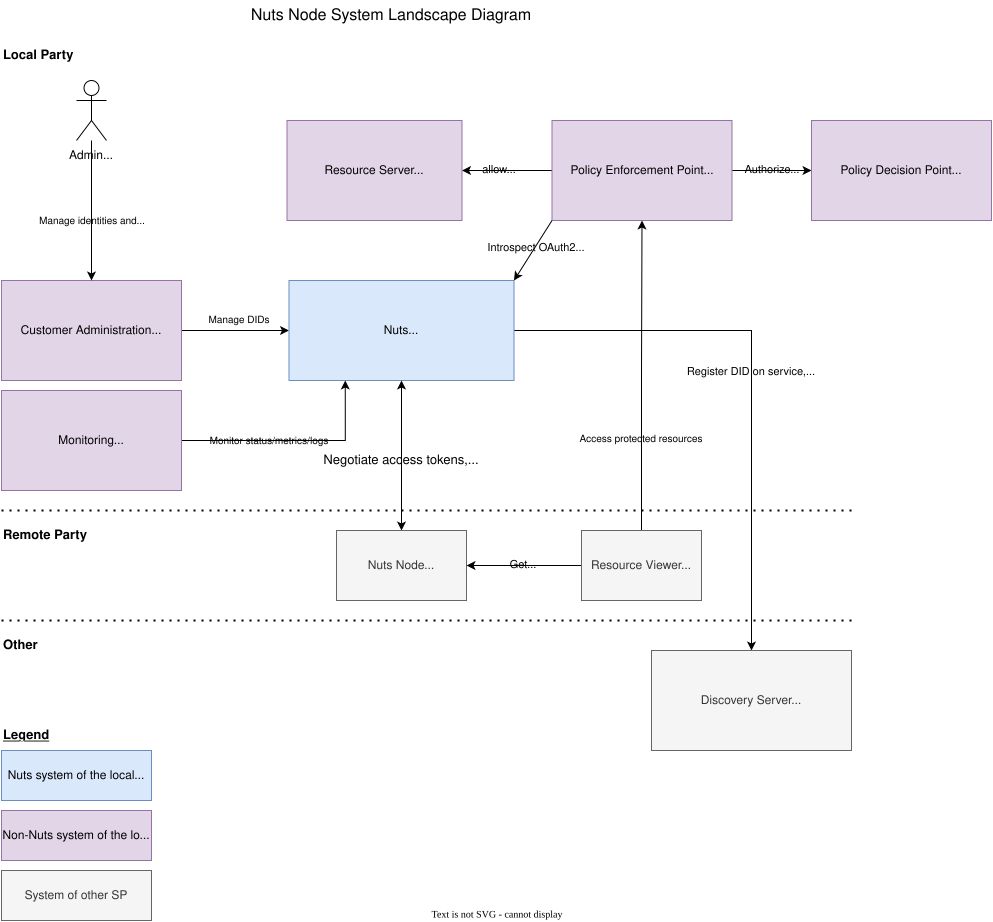
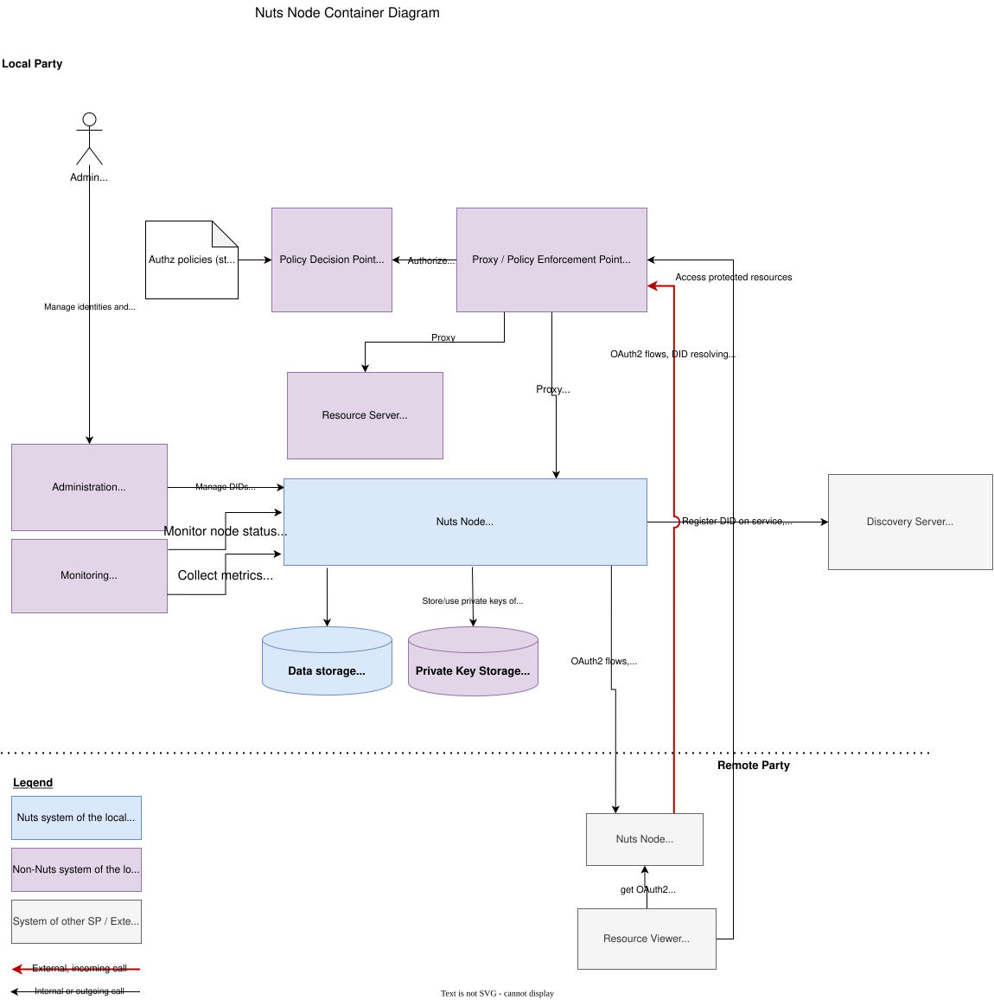

Recommended Deployment
This document describes the systems and their components involved in deploying a Nuts node in a production environment. The target audience are engineers that want to deploy a Nuts Node.
It does not detail services and interfaces specified by use cases: those should be documented by the particular use case and should be regarded as extensions to the deployment described here.
The container diagram documents the recommended way of deploying a Nuts node using the features supported by the Nuts node’s version.
The diagrams are in C4 model notation.
System Landscape
The diagram below depicts the actors that interact with the Nuts node of the local party.

Containers
This section details the system with involved containers (which can be native or containerized processes, physical or remote database servers). It lists the interfaces of the Nuts node, who uses them and how they should be secured.

Nuts Node
Server that implements the Nuts specification that connects to the Nuts network. It will usually run as Docker container or Kubernetes pod.
It is interacted with through HTTP by internal and external actors. Internal actors typically include:
Administrative applications (e.g. customer management application in a multi-tenant environment)
Ops tooling (e.g. metric collectors)
Resource viewer/consumer application that wants to access protected resources at a remote party
The APIs these internal actors use are on the “internal” HTTP interface, which is bound to 127.0.0.1:8081 by default.
External actors typically include:
Verifiable Credential issuers, verifiers and/or wallets
OAuth2 client applications (e.g. a viewer accessing a protected resource on the Resource Server)
The APIs these external actors use are on the “public” HTTP interface, which is bound to :8080 by default.
Public Endpoints
This section describes HTTP endpoints that need to be reachable for third parties.
These HTTP endpoints are available on :8080.
/iam: for resolving DID documents.
Users: Verifiable Credential issuers and verifiers, OAuth2 client applications (e.g. other Nuts nodes, resource viewers)
Security: HTTPS with publicly trusted server certificate (on proxy).
- /oauth2: for accessing OAuth2 and OpenID services.
/callbackand/authorizeare disabled by default on the Nuts node. They can be enabled by settingauth.authorizationendpoint.enabledtotrue. Use this only for experimental OpenID4VCI and OpenID4VP use cases.
Users: Verifiable Credential issuers and verifiers, OAuth2 client applications (e.g. other Nuts nodes, resource viewers)
Security: HTTPS with publicly trusted server certificate (on proxy). Monitor traffic to detect attacks.
- /oauth2: for accessing OAuth2 and OpenID services.
/.well-known: for resolving DID documents, OpenID and OAuth2 metadata
Users: Other Nuts nodes, Verifiable Credential issuers and verifiers.
Security: HTTPS with publicly trusted server certificate (on proxy).
/statuslist: for retrieving the Verifiable Credential revocations.
Users: Verifiable Credential verifiers (e.g. other Nuts nodes).
Security: HTTPS with publicly trusted server certificate (on proxy).
Optional Public Endpoints
/discovery: for discovering server endpoints. Forward if your node is acting as a discovery service server.
Users: Other Nuts nodes.
Security: HTTPS with publicly trusted server certificate (on proxy).
Internal Endpoints
This section describes HTTP endpoints that must only be reachable by your own applications integrating with the Nuts node.
These endpoints are by default available on 127.0.0.1:8081.
If you need to access them from another host, you can bind it to a different interface (e.g. :8081 for all interfaces).
/internal: for managing everything related to DIDs, VCs and the Nuts Node itself. Very sensitive endpoints with no additional built-in security, so care should be taken that no unauthorized parties can access it.
Users: operators, administrative and resource owner applications.
Security: restrict access through network separation and platform authentication.
/status: for inspecting the health of the server, returns
OKif healthy.Users: monitoring tooling.
Security: restrict access through network separation.
/status/diagnostics: for inspecting diagnostic information of the server.
Users: monitoring tooling, system administrators.
Security: restrict access through network separation.
/metrics: for scraping metrics in Prometheus format.
Users: monitoring/metrics tooling.
Security: restrict access through network separation.
/health: for checking the health of the server, returns
OKif healthy.Users: Docker or Kubernetes health checks.
Security: restrict access through network separation.
Legacy Endpoints
There are deprecated endpoints that are still supported for backwards compatibility.
If your use case does not require did:nuts DIDs and/or the gRPC network, you can limit/disable access to these endpoints.
- /n2n (public): for providing Nuts services to other nodes (e.g. creating access tokens).
The local node also calls other nodes on their
/n2nendpoint, these outgoing calls are subject to the same security requirements. Server-to-server credential issuance fordid:nutsDIDs also runs over this endpoint; see Registering node-http-services-baseurl for how nodes discover each other’s/n2nbase URL.Users: Other Nuts nodes.
Security: HTTPS with server- and client certificates (mTLS) according to network trust anchors (on proxy). Monitor traffic to detect attacks.
/public (public): for accessing public services, e.g. IRMA authentication.
Users: IRMA app.
Security: HTTPS with publicly trusted server certificate (on proxy). Monitor traffic to detect attacks.
gRPC: for communicating with other Nuts nodes according to the network protocol. Uses HTTP/2 on port
5555as transport, both outbound and inbound.Users: Other Nuts nodes.
Security: HTTPS with server- and client certificates (mTLS) according to network trust anchors (on proxy). This is provided by the Nuts node.
Proxy / API Gateway
Process that protects and routes HTTP (specified above) to the Nuts Node. Typically a standalone HTTP proxy (e.g. NGINX or HAProxy) that resides in a DMZ and/or an ingress service on a cloud platform. It will act as TLS terminator.
The Nuts Node looks for a header called X-Forwarded-For to determine the client IP when logging calls.
Refer to the documentation of your proxy on how to set this header.
This process can also act as API Gateway to give external parties access to the Resource Server. This API Gateway should then introspect the OAuth2 access token at the Nuts node and perform additional authorization checks (depending on the use case).
Data storage
Primary data storage for all persistent data other than private keys. By default, it stores data on-disk using SQLite. For production, MySQL or Postgres is recommended.
Private Key Storage
Creating DID documents causes private keys to be generated, which need to be safely stored so the Nuts node can access them. It is recommended to store them in Vault or other secure key store. Refer to the config options of the crypto engine and Vault documentation for configuring it.
Production Checklist
Below is a list of items that should be addressed when running a node in production:
- Reverse proxy
Use a proxy in front of the node which terminates TLS
Make sure the reverse proxy sets the header configured in
http.clientipheader(defaultX-Forwarded-For) to log correct IP addresses
- Backup Management
Make sure data is backed up (data stored in SQL and private keys)
Have a tested backup/restore procedure
- Configuration
Make sure
strictmodeis enabled (default)
- Security
- If not using
did:nuts, prevent access to: The gRPC endpoint (e.g. by not mapping it in Docker).
The public
/n2nand/publicendpoints on HTTP:8080. See the v5 documentation for deployments still usingdid:nuts.
- If not using
consult general security considerations in the Security Considerations section.
Resource Requirements
The Nuts node is built to be lightweight in terms of CPU and memory usage.
The minimum system for development and test are:
1 CPU
512 MB RAM
25 GB storage
Recommended system requirements for production depends on the expected load and use cases.
It’s recommended to keep track of the system’s performance and adjust the resources accordingly.
CPU and memory usage, and the API response times are good indicators of the system’s performance.
Make sure the CPUs are of a decent speed, as some operations are CPU-bound.
The exposed metrics for process_cpu_seconds_total, go_gc_duration_seconds_sum and go_memstats_alloc_bytes are a good starting point for monitoring CPU and memory usage.
SQL storage size is influenced by:
the number of DIDs created on the node
the number of credentials issued or held
the size (participating parties) and number of use cases